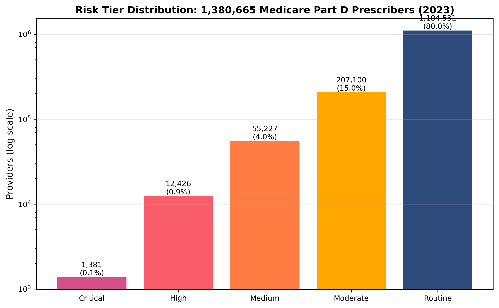
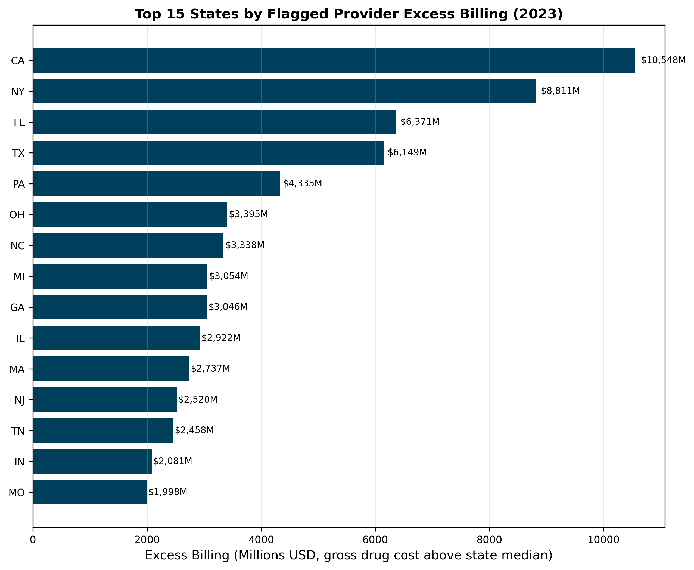
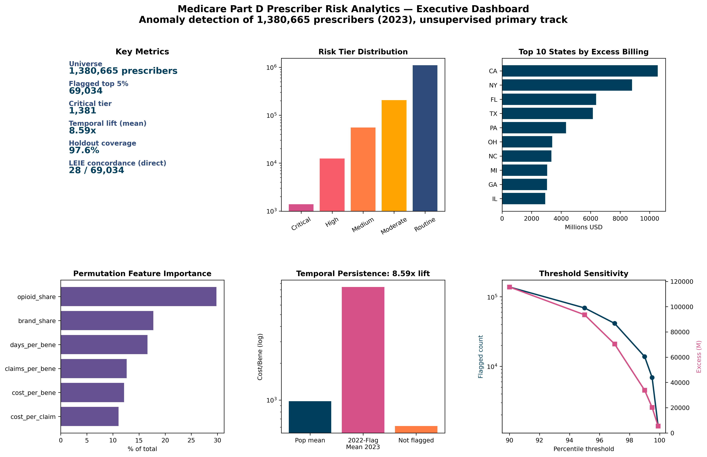

Medicare Part D Prescriber Risk Analytics
A reproducible risk scoring framework for every active Medicare Part D prescriber. The system combines statistical peer benchmarking with isolation forest machine learning across six engineered features, and validates the resulting risk score against an honest temporal holdout: providers newly added to the HHS OIG List of Excluded Individuals and Entities in 2023.
Methodology
The analytical universe consists of 1,380,665 active Medicare Part D prescribers from the 2023 Public Use File. Six features are engineered from the underlying CMS columns: cost per claim, claims per beneficiary, cost per beneficiary, days per beneficiary, opioid share, and brand share. Each feature is standardized and assigned a statistical risk weight that sums to one.
The combined risk score blends the statistical component (weight 0.60) with an isolation forest machine learning component (weight 0.40). The isolation forest runs with one hundred trees, contamination set to 0.02, and a fixed random seed for reproducibility. Providers are placed into five risk tiers based on the percentile rank of the combined score.
Temporal validation uses an honest holdout: the model is trained on data through 2022 only, and tested against LEIE exclusions filed in 2023. This avoids the in sample inflation common in fraud detection benchmarks.
Key findings
The flagged top five percent of prescribers (69,034 providers) represents an analytical priority set for downstream review. The tier distribution stratifies risk into Critical (1,381), High (12,426), Medium (55,227), Moderate (207,100), and Routine (1,104,531).
Temporal stability is high. Of providers flagged in the 2022 universe, 97.61 percent remain in the 2023 universe, with mean cost per beneficiary 8.59 times the population mean and median lift of 16.08 times.
Permutation importance identifies opioid share (29.80 percent) and brand share (17.74 percent) as the most discriminating features, followed by days per beneficiary, claims per beneficiary, cost per beneficiary, and cost per claim.
The bootstrap ninety five percent confidence interval on the flagged sample excess is 92,766 to 94,688 million dollars based on two hundred resample iterations.
Selected figures



Verification
Every numerical claim in this project traces to a persisted result file in the public rebuild repository. The full claims traceability table maps each number to its source file, the notebook section that produced it, and the exact computational basis. Reviewers can reproduce any flagged provider from the same CMS public use files and LEIE downloadable database used in the analysis.